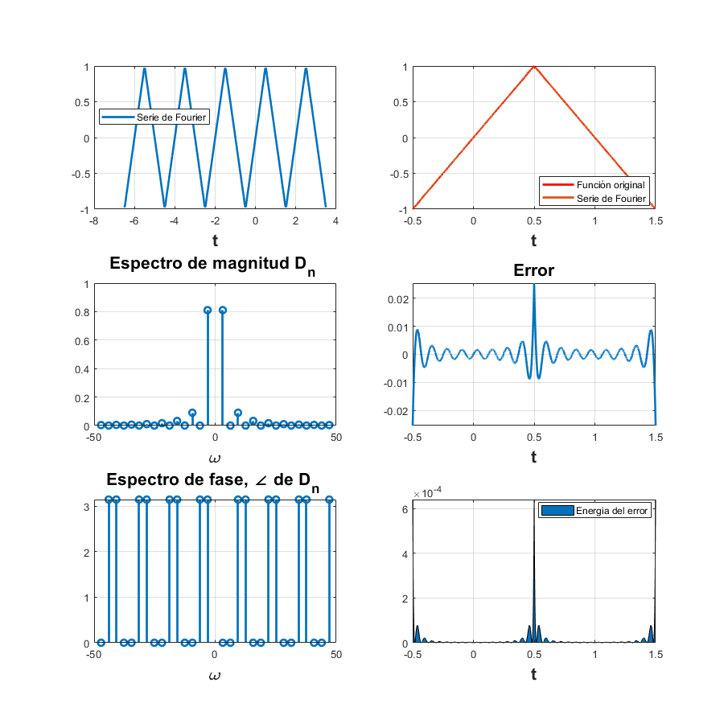

Práctica 7: Series de Fourier en tiempo continuo
Contents
Integrantes
Portillo Martínez Arturo
Objetivos
- Realizar gráficas de series de Fourier exponenciales y trigonométricas en tiempo continuo.
- Manipulación de instrucciones en MATLAB.
Desarrollo
Resolver cada uno de los siguientes problemas:
- Gráfica de la serie de Fourier en un intervalo que muestre 5 repeticiones.
- Gráfica de la señal y la serie de Fourier para 15 armónicos.
- Gráfica del error.
- Gráfica de la energía del error.
- Espectro de magnitud para 15 armónicos.
- Espectro de fase para 15 armónicos.
- Ejemplo 6.2 Agregar la expresión análitica de la serie en ambos formatos. Utilizar A = 1.
- Ejemplo 6.4 Agregar la expresión análitica de la serie en ambos formatos.
- PR08 Agregar la expresión análitica de la serie en ambos formatos (hay dos series en esta tarea).
- PR10 Agregar la expresión análitica de la serie en ambos formatos (ejercicio 1 y ).
Ejemplo 6.2
Se tiene la siguiente serie de Fourirer en forma trigonométrica compacta:
Y se tienen la siguiente serie de Fourier en forma exponencial compleja:
d0=0; dn=@(n) -j*(4/((n^2)*(pi^2)))*sin((n*pi)/2); t0=-0.5; tf=1.5; f=@(t) (2.*t).*(abs(t)<=0.5) + (2.*(1-t)).*((0.5<t)&(t<=1.5)); armo=15; a=-6.5; b=3.5; sfc(t0,tf,dn,d0,f,armo,a,b,1)
Ejemplo 6.4
Se tiene la siguiente serie de Fourirer en forma trigonométrica compacta:
Y se tienen la siguiente serie de Fourier en forma exponencial compleja:
d0=0.5; dn=@(n) (1/(n*pi))*sin((n*pi)/2); t0=-pi; tf=pi; f=@(t) (1).*(((-pi/2)<t)&(t<(pi/2))) armo=15; a=-5*pi; b=5*pi; sfc(t0,tf,dn,d0,f,armo,a,b,2)
f =
function_handle with value:
@(t)(1).*(((-pi/2)<t)&(t<(pi/2)))
PR08.1
Se tiene la siguiente serie de Fourirer en forma trigonométrica compacta:
Y se tienen la siguiente serie de Fourier en forma exponencial compleja:
d0=0; dn=@(n) ((cos(pi*n)/(pi*n))-(sin(pi*n)/((pi^2)*(n^2))))*j; t0=-1; tf=1; f=@(t) (t).*((-1<t)&(t<1)) armo=15; a=-5; b=5; sfc(t0,tf,dn,d0,f,armo,a,b,3)
f =
function_handle with value:
@(t)(t).*((-1<t)&(t<1))
PR08.2
Se tiene la siguiente serie de Fourirer en forma trigonométrica compacta:
Y se tienen la siguiente serie de Fourier en forma exponencial compleja:
d0=(4/3); dn=@(n) ((8/(pi^2 * n^2))*cos(pi*n)) - (8/(pi^3 * n^3))*cos(pi*n)*j + (4/(pi*n))*cos(pi*n)*j; t0=-2; tf=2; f=@(t) (t.^2).*((-2<t)&(t<2)) armo=15; a=-10; b=10; sfc(t0,tf,dn,d0,f,armo,a,b,4)
f =
function_handle with value:
@(t)(t.^2).*((-2<t)&(t<2))
PR10
Se tiene la siguiente serie de Fourirer en forma trigonométrica compacta:
Y se tienen la siguiente serie de Fourier en forma exponencial compleja:
d0=(4*(1-exp(-4)))/4; dn=@(n) (4*(1-(exp(-4)*cos(pi*n))))/(4+(pi^2)*(n^2)); t0=-0.5; tf=0.5; f=@(t) 2.*exp(-2.*abs(t)) armo=15; a=-2.5; b=2.5; sfc(t0,tf,dn,d0,f,armo,a,b,5)
f =
function_handle with value:
@(t)2.*exp(-2.*abs(t))